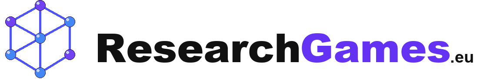
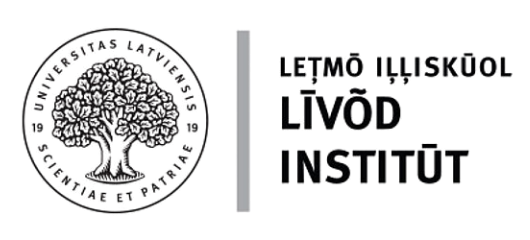
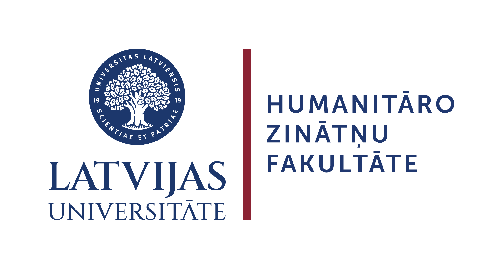

Ātrā spēle
5 vietvārdi vienā kārtā – pa vienam no katra grūtības līmeņa.
Lībiešu vietvārdu spēle aicina iepazīt Latvijas vietvārdus lībiešu valodā, savienojot tos ar atbilstošajiem nosaukumiem latviešu valodā un atklājot vietas kartē.
Veidotāji un sadarbība
Spēli izstrādāja Latvijas Universitātes Digitālo humanitāro zinātņu centrs sadarbībā ar LU Lībiešu institūtu projekta ȬPEN ietvaros (Nr. ZDA-LIP 2025/2). Projekts veicina zināšanu pieejamību un sabiedrības iesaisti zināšanu radīšanā.
Spēle ir iekļauta ResearchGames.eu spēļu kolekcijā un ir atvērtā koda projekts, kas pieejams GitHub.
The game was developed by the University of Latvia Digital Humanities Centre in collaboration with the University of Latvia Livonian Institute as part of the ȬPEN project (No. ZDA-LIP 2025/2). The project promotes access to knowledge and public participation in knowledge creation.
The game is included in the ResearchGames.eu game collection and is an open-source project available on GitHub.





Spēles ideja
Vietvārdi glabā valodas, kultūras un Latvijas vēstures liecības. Spēle ļauj ieraudzīt, kā pazīstamas Latvijas vietas sauc lībiešu valodā, un parāda lībiešu valodas klātbūtni Latvijas kultūrtelpā.
Spēlē izmantots Lībiešu vietvārdu katalogs, ko sagatavojis LU Lībiešu institūts.
Place names preserve traces of language, culture and Latvia’s history. The game shows how familiar places in Latvia are named in Livonian and makes the presence of Livonian visible in Latvia’s cultural landscape.
The game uses the Catalogue of Livonian Place Names, prepared by the University of Latvia Livonian Institute.
Spēles versijas
Izvēlies vienu no četriem spēles variantiem. Katrā jaunā spēlē vietvārdi tiek atlasīti nejauši, bez atkārtojumiem vienas spēles ietvaros.
5 vietvārdi vienā kārtā – pa vienam no katra grūtības līmeņa.
10 vietvārdi divās kārtās pa pieciem. Otrajā kārtā ir grūtāk atpazīstami nosaukumi.
25 vietvārdi piecās kārtās pa pieciem. Katrā kārtā nejauša izlase no attiecīgā grūtības līmeņa vietām – no vieglākām līdz grūtākām.
5 uzdevumi. Katrā atrodi doto lībiešu vietvārdu starp pieciem punktiem A–E. Kartes pamatnē vietu nosaukumi ir paslēpti.
Savienošanas spēlēs izvēlies nosaukumu jebkurā no abām kolonnām.
Izvēlies atbilstošo nosaukumu otrā kolonnā. Spēle pāri pārbauda automātiski.
Ātrajā un Vidējā spēlē karte parādās beigās. Garajā spēlē vietas atklājas spēles gaitā un pēc katras kārtas.
Spēlē “Atrodi kartē” izvēlies vienu no pieciem punktiem. Pēc kļūdas vari mēģināt citu punktu; pēc pareizas atbildes spied “Nākamā vieta”. Beigās karte rāda visas piecas atrastās vietas.
Punktu sistēma
Dati un pētniecība
Spēles sesijas rezultāti un brīvprātīgās aptaujas atbildes pētniecībai tiek nosūtītas tikai Garajā spēlē. Ātrā, Vidējā un kartes spēle sesiju rezultātus uz pētījuma datu tabulu nesūta. Garajā spēlē tiek saglabāti šādi anonīmi dati:
Šie dati palīdz pētniekiem novērtēt spēles saprotamību, grūtības pakāpi, lietošanas pieredzi un tās piemērotību lībiešu vietvārdu iepazīšanai. Tie tiek izmantoti arī spēles uzlabošanai un pētniecības rezultātu apkopošanai.
Atbildēšana uz pētnieku jautājumiem ir brīvprātīga. Spēles datu tabulā netiek saglabāts spēlētāja vārds, e-pasta adrese, IP adrese, precīza atrašanās vieta, ierīces identifikatori vai cita informācija, kas paredzēta personas identificēšanai. Brīvā teksta komentārā lūdzam neiekļaut personisku informāciju.
Jautājumiem par datu vākšanu: dhc@lu.lv
Game-session results and optional survey answers are submitted for research only in the long game. The quick, medium and map games do not send session results to the research data sheet. The long game stores the following anonymous data:
These data help researchers evaluate the game’s clarity, level of difficulty, user experience and suitability for learning about Livonian place names. They are also used to improve the game and compile research results.
Answering the researchers’ questions is voluntary. The game data sheet does not store the player’s name, email address, IP address, precise location, device identifiers or other information intended to identify the player. Please do not include personal information in the optional free-text comment.
Questions about data collection: dhc@lu.lv